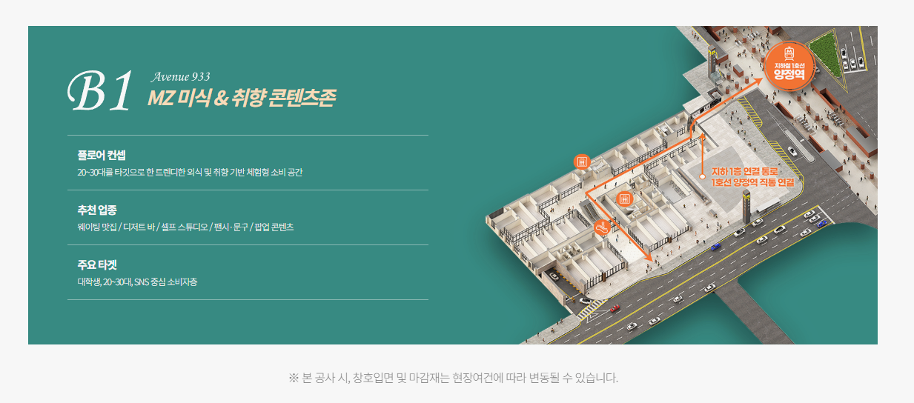
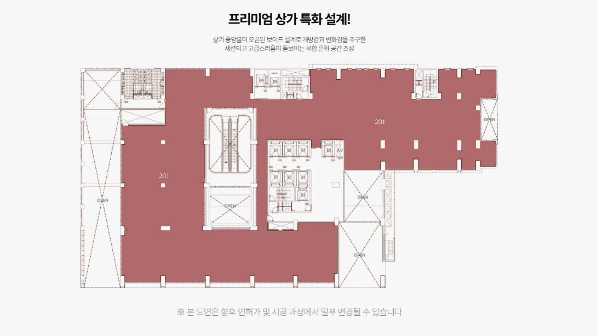

MEDICAL FACILITY GUIDE
부산진구 메디칼,
병원은 공간 조건부터 달라야 합니다
‘부산진구 메디칼’ 상가를 찾는다면 일반 상가보다 시설 조건을 더 꼼꼼히 봐야 합니다. 예정 진료과와 장비에 따라 필요한 전기, 급배수, 환기, 소방, 하중, 동선이 달라지기 때문입니다.
병원 입점은 건축물 용도 확인부터
부산진구 메디칼 상가를 찾는 경우 가장 먼저 확인해야 할 것은 건축물의 용도와 의료기관 개설 가능 여부입니다. 병원이나 의원은 일반 사무실이나 판매시설과 달리 관련 시설 기준을 충족해야 하므로 공간을 먼저 계약한 뒤 용도나 시설 문제를 발견하면 전체 일정이 크게 지연될 수 있습니다.
따라서 임대차나 분양 계약 전 건축물대장과 호실의 용도를 확인하고, 예정 진료과의 개설 가능 여부를 전문가와 함께 검토하는 것이 좋습니다. 특히 의원급과 병원급은 필요한 요건이 달라질 수 있으므로 단순히 ‘병원 가능 상가’라는 설명만 믿기보다 실제 개설 절차와 시설 요건을 구체적으로 확인해야 합니다.
전기·급배수·환기 조건은 진료과마다 다릅니다
부산진구 메디칼 상가는 진료과목에 따라 필요한 설비가 달라집니다. 치과는 체어와 장비를 위한 전력과 급배수, 압축공기 설비를 고려해야 하고 피부과나 정형외과는 레이저·영상·치료 장비의 전력 조건을 확인해야 할 수 있습니다. 내과나 소아청소년과 역시 진료실과 처치실, 검사공간을 구성할 수 있는 구조인지 확인하는 것이 중요합니다.
또한 냉난방과 환기, 실외기 설치 위치, 배수관 위치, 천장 내부 설비 등을 인테리어 전에 확인하면 공사 변경을 줄일 수 있습니다. 예상보다 설비 공사비가 커지는 경우가 많기 때문에 호실 선택 단계부터 설계 가능성을 함께 검토하는 것이 현실적입니다.

환자 동선과 직원 동선을 함께 설계해야 합니다
병원 공간은 단순히 예쁘게 보이는 것보다 환자와 직원이 편하게 움직일 수 있도록 구성되어야 합니다. 접수와 대기, 진료, 검사, 처치, 수납이 자연스럽게 이어져야 하며 환자 동선과 직원 동선이 지나치게 겹치지 않도록 배치하는 것이 좋습니다.
고령 환자나 유모차, 휠체어 이용자가 있는 진료과라면 엘리베이터에서 진료실까지의 이동 폭과 문턱, 복도 폭도 중요합니다. 또한 보호자가 함께 방문하는 진료과는 대기공간과 화장실 접근성까지 확인해야 실제 운영 시 불편을 줄일 수 있습니다.

소방·피난과 장비 반입 동선 체크
병원 인테리어에서는 소방과 피난동선도 중요한 요소입니다. 방화구획이나 스프링클러, 감지기, 피난통로를 임의로 변경할 수 없기 때문에 설계 초기부터 관련 조건을 확인해야 합니다. 특히 진료실을 여러 개로 나누는 경우 벽체와 출입구 계획에 따라 소방설비 변경이 필요할 수 있습니다.
대형 의료장비가 들어가는 진료과라면 장비 반입 경로도 사전에 확인해야 합니다. 엘리베이터 크기와 적재하중, 출입문 폭, 복도 회전 반경을 확인하지 않으면 장비 반입 과정에서 추가 비용이나 공사가 발생할 수 있습니다.
부산진구 메디칼 상가 개원 전 체크리스트
- 의료기관 개설 가능한 건축물 용도인지 확인
- 진료과 장비에 필요한 전기용량과 급배수 확인
- 실외기·환기·배기 설비 설치 가능 여부 확인
- 소방·피난동선과 장비 반입 경로 점검
- 엘리베이터·주차장에서 진료실까지 이동 편의 확인

메디칼 상가는 ‘운영 가능한 공간’인지 봐야 합니다
결국 부산진구 메디칼 상가는 ‘평수가 넓은 곳’보다 실제 진료 운영이 가능한 공간인지가 핵심입니다. 필요한 진료실 수, 예상 환자 수, 직원 수, 의료장비, 대기공간 규모를 먼저 정리한 뒤 호실을 비교하면 선택 기준이 명확해집니다.
계약 전에는 건축물 용도, 전기, 급배수, 소방, 환기, 주차, 엘리베이터, 간판 노출을 체크하고 인테리어 설계 가능성까지 확인하는 것이 좋습니다. 초기 검토를 충분히 해두면 개원 일정과 비용을 보다 안정적으로 관리할 수 있습니다.
부산진구 메디칼 자주 묻는 질문
부산진구 메디칼 상가 계약 전 가장 먼저 볼 것은 무엇인가요?
의료기관 개설 가능 여부와 건축물 용도, 진료과별 설비 조건을 우선 확인하는 것이 좋습니다.
병원 인테리어 전에 전기용량을 확인해야 하나요?
네. 의료장비와 냉난방 설비 사용량을 고려해 필요한 전력 용량을 미리 확인해야 합니다.
장비 반입도 상가 선택 기준인가요?
대형 장비가 있다면 엘리베이터 크기, 적재하중, 출입구 폭과 반입 경로를 반드시 확인하는 것이 좋습니다.
부산진구 메디칼
상담으로 조건을 확인하세요.
- 호실별 면적·위치 안내
- 분양·임대 조건 개별 확인
- 주차·동선·업종 적합성 상담